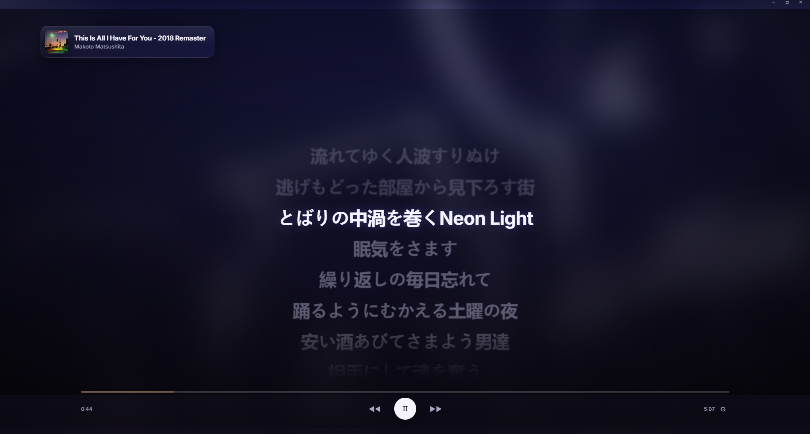

Free direct download
Install the latest Android build from GitHub Releases without a paid app-store account.
A small window for a big feeling
Synchronized lyrics, album-art atmosphere, and a layout that fits your desktop — without opening another full-size player.
Latest release · Windows 10/11 + Android · No account required

Now on Android
Use the phone visualizer with touch-friendly layouts, Spotify media access, and Android Auto media controls.
Install the latest Android build from GitHub Releases without a paid app-store account.
Android Auto can show artwork, title, artist, progress, and safe playback controls.
Android setup
The APK is free to download directly from GitHub. No Play Store account is required.
Tap Get Android APK above and choose the file ending in .apk.
If Android asks, enable Allow from this source for your browser or file manager, then return and install.
Open the app, choose Enable Spotify access, allow notification access, and return to the app.
Connect your phone, open the media-source picker, and select NowPlaying Visuals. Driving mode shows safe media controls, not the full visualizer.
What it does
It reads the music already playing and turns it into a focused visual layer you can make your own.
Time-synced lyrics update with the current track and recover when Spotify reconnects.
Album art shapes the atmosphere, or use your own theme with precise HSL sliders.
Drag, resize, and save layouts for lyrics, cover art, title, status, clock, and more.
A native Rust backend keeps media updates responsive without becoming another heavy player.
Theme & layout studio
Name and save custom themes locally. Build a layout around the way you listen, then keep it ready for next time.
Built for real desktop use
Spotify changes, sleep and resume, missed media events, and reconnects are handled in the background. Your window stays focused on the song.
Ready when you are